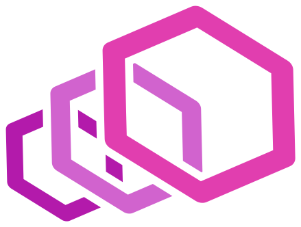
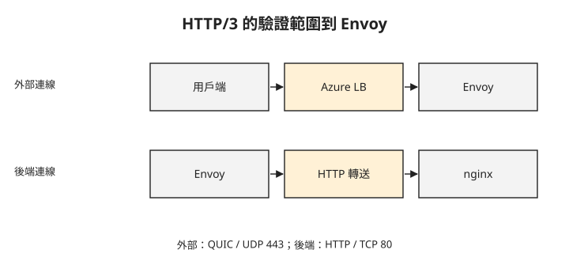
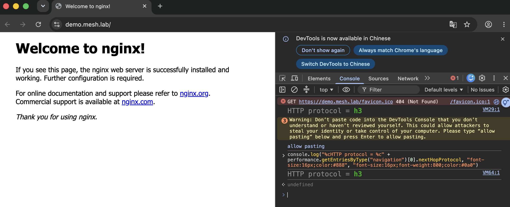

Day 1：用 Envoy Gateway 驗證入口路由與 HTTP/3¶

同一個 nginx 網站已經可以透過 Service 存取。接續 Day 0 的入口需求，現在要讓外部使用者用 demo.mesh.lab 連進來，並且支援 HTTP/3。
本章採用 Envoy Gateway，透過 Gateway API 這組 Kubernetes 資源管理入口。Envoy Gateway 控制器讀取這些資源，建立 Envoy 代理與對外的 LoadBalancer Service，並把入口規則轉成代理設定；實際接收連線、處理 TLS 與轉送請求的是 Envoy 代理。這樣就能用 Kubernetes 資源管理主機名稱、路由與協定，不必直接撰寫底層 Envoy 設定，分工可參考官方概念文件。若不使用 Envoy Gateway，就需要自行管理 Envoy 設定，或採用其他入口控制器。
頁面能打開，只能說明某條路徑成功；它不能告訴你主機名稱規則是否生效，也不能證明使用了 HTTP/3。這章會用對照請求與協定資訊，分別判斷這兩件事。
先備妥 Pod 網路與入口控制器¶
重現本章時，請採用 AKS、Cilium 1.20.0、Envoy Gateway v1.8.3 與 Kubernetes 1.35.6 的版本組合；這些版本不是最低版本要求。實作前需備妥可使用的 AKS 叢集、Helm，以及命名空間 mesh-demo 中名為 web、連接埠為 80 的 nginx Service 與後端 Pod。範例網域不需要公開 DNS；後續以 Host 標頭或 --resolve 指定路由與位址。
這組練習環境使用 BYOCNI（自行安裝 CNI）：建立 AKS 時選用 network-plugin none，再自行安裝 Cilium。它讓後續章節可以調整 Cilium 與 Istio 共存所需的設定；已有其他 CNI 的叢集不能直接照下面安裝指令覆蓋。本章不提供既有叢集的 CNI 遷移程序。
尚未安裝 CNI 時，控制平面可以是 Running，但節點仍然 NotReady。下面兩行呈現的就是這個差別：
prov=Succeeded power=Running k8s=1.35.6 networkPlugin=none containerd=2.3.3-2
aks-nodepool1-31753998-vmss000000 NotReady ... containerd://2.3.3-2
networkPlugin=none 與節點的 NotReady 要一起判讀。先確認使用的是預定的 BYOCNI 環境，再安裝網路外掛。下列指令需要 Helm 已加入 Cilium chart repository；<API server FQDN> 請替換成該叢集 kubeconfig 中 server URL 的主機名稱，不含 https:// 與連接埠。
helm install cilium cilium/cilium --version 1.20.0 --namespace kube-system \
--set aksbyocni.enabled=true --set nodeinit.enabled=true \
--set kubeProxyReplacement=true \
--set k8sServiceHost=<API server FQDN> --set k8sServicePort=443 \
--set socketLB.hostNamespaceOnly=true \
--set cni.exclusive=false --set envoyConfig.enabled=true
cni.exclusive=false 允許後續 Istio CNI 共存；socketLB.hostNamespaceOnly=true 限制 socket 負載平衡的作用範圍，供 ambient 的流量導引使用。這些設定在 Day 2 會繼續使用。安裝完成後，除了節點 Ready，還要確認 Cilium 與 Envoy 狀態：
aks-nodepool1-31753998-vmss000000 Ready <none> 6m30s v1.35.6
# cilium status
Cilium: OK
Envoy DaemonSet: OK
Cluster Pods: 5/5 managed by Cilium
AKS 管理的 kube-proxy DaemonSet 不會因為設定 kubeProxyReplacement=true 就自動刪除；檢查 Cilium 狀態時，仍可能看到它。
接著需要先安裝 Envoy Gateway 控制器及它使用的 Gateway API CRD；安裝方式見官方快速入門。以下以控制器與 CRD 已就緒為前提，繼續設定入口與路由。
全新安裝時，依 v1.8 安裝文件安裝控制器與兩組 CRD，版本固定為本章的 v1.8.3，再用 Kubernetes v1.35 的 wait 等待 CRD 與控制器就緒（依官方文件補上，本課沒有實跑）：
helm install eg oci://docker.io/envoyproxy/gateway-helm \
--version v1.8.3 --namespace envoy-gateway-system --create-namespace
kubectl wait --for=condition=Established --timeout=5m \
crd/gatewayclasses.gateway.networking.k8s.io \
crd/gateways.gateway.networking.k8s.io \
crd/httproutes.gateway.networking.k8s.io \
crd/clienttrafficpolicies.gateway.envoyproxy.io
kubectl wait -n envoy-gateway-system deployment/envoy-gateway \
--for=condition=Available --timeout=5m
把入口選擇、監聽與路由分開¶
Gateway API 將不同管理責任分成幾種物件。GatewayClass 選擇控制器實作；Gateway 宣告入口的 listener，也就是接收連線的協定與連接埠；HTTPRoute 宣告哪些 HTTP 請求送到哪個 Service。平台團隊可以管理共用 Gateway，應用團隊則管理自己的路由。
以下是已驗證的 HTTP 路由設定。套用前，前述 web Service 必須已存在。先看 parentRefs 如何將 HTTPRoute 連到 eg，再看 backendRefs 如何指向 web:80：
apiVersion: gateway.networking.k8s.io/v1
kind: GatewayClass
metadata:
name: eg
spec:
controllerName: gateway.envoyproxy.io/gatewayclass-controller
---
apiVersion: gateway.networking.k8s.io/v1
kind: Gateway
metadata:
name: eg
namespace: mesh-demo
spec:
gatewayClassName: eg
listeners:
- name: http
protocol: HTTP
port: 80
hostname: "demo.mesh.lab"
allowedRoutes:
namespaces:
from: Same
---
apiVersion: gateway.networking.k8s.io/v1
kind: HTTPRoute
metadata:
name: web
namespace: mesh-demo
spec:
parentRefs:
- name: eg
hostnames:
- "demo.mesh.lab"
rules:
- matches:
- path:
type: PathPrefix
value: /
backendRefs:
- name: web
port: 80
hostnames 限定 demo.mesh.lab，PathPrefix: / 則匹配它底下的路徑。Gateway 與 HTTPRoute 放在同一個 mesh-demo 命名空間，符合 listener 的 allowedRoutes 設定。
將上方完整 YAML 存成 gateway-http.yaml 後，套用資源並等待 Gateway 完成配置，再依 v1.8 狀態查詢文件與 Kubernetes v1.35 的 get 查詢資源狀態與入口 IP（依官方文件補上，本課沒有實跑）：
kubectl apply -f gateway-http.yaml
kubectl wait -n mesh-demo gateway/eg \
--for=condition=Programmed --timeout=5m
kubectl get gatewayclass eg -o yaml
kubectl get -n mesh-demo gateway/eg httproute/web -o yaml
kubectl get svc -n envoy-gateway-system \
-l gateway.envoyproxy.io/owning-gateway-namespace=mesh-demo,gateway.envoyproxy.io/owning-gateway-name=eg \
-o wide
控制器接受設定後，應再確認它已完成配置，且後端參照可解析。驗證結果如下：
Gateway eg: Accepted=True Programmed=True
HTTPRoute web: Accepted=True ResolvedRefs=True
envoy-mesh-demo-eg-dd08789d LoadBalancer <LB-IP> 80:32421/TCP
Accepted=True 表示設定被接受，Programmed=True 表示 Gateway 已配置；HTTPRoute 的 ResolvedRefs=True 則表示參照能解析。這些狀態仍不能取代一次實際請求。將 <LB-IP> 換成該 LoadBalancer Service 的外部 IP，再用兩種 Host 測試：
$ curl -H "Host: demo.mesh.lab" http://<LB-IP>/
HTTP/1.1 200 OK
server: nginx/1.13.6
$ curl -H "Host: nope.invalid" http://<LB-IP>/
wrong-host -> HTTP 404
同一個入口 IP，正確 Host 回 200、錯誤 Host 回 404，才把 hostname 匹配也驗到了。server: nginx 提供後端回應的線索，但單憑這個標頭無法證明整條代理路徑；需要和 Gateway 狀態、所使用的入口 IP 一起判讀。
啟用 HTTP/3 前，先建立 HTTPS listener¶
HTTP/3 使用 QUIC 傳送 HTTP，QUIC 建立在 UDP 上。這次要驗證的是用戶端到 Envoy 的連線；Envoy 可以把請求轉成另一種 HTTP 版本送給 nginx。
下圖標出協定終止的位置。注意最右邊：後端不必改成 HTTP/3，才能讓外部入口提供 HTTP/3。

因此要同時檢查 UDP 443 能否抵達 Envoy，以及 HTTPS listener 的憑證是否符合 demo.mesh.lab。先在 mesh-demo 備妥名為 demo-tls 的 TLS Secret，再以以下已驗證的 Gateway 設定加入 HTTPS listener。憑證需包含對應網域，瀏覽器測試還需要信任它的簽發者。
apiVersion: gateway.networking.k8s.io/v1
kind: Gateway
metadata:
name: eg
namespace: mesh-demo
spec:
gatewayClassName: eg
listeners:
- name: http
protocol: HTTP
port: 80
hostname: "demo.mesh.lab"
allowedRoutes:
namespaces:
from: Same
- name: https
protocol: HTTPS
port: 443
hostname: "demo.mesh.lab"
tls:
mode: Terminate
certificateRefs:
- kind: Secret
name: demo-tls
allowedRoutes:
namespaces:
from: Same
tls.mode: Terminate 表示 TLS 在 Gateway 終止，certificateRefs 則指定憑證。這些前提完成後，才加入 ClientTrafficPolicy，也就是 Envoy Gateway 管理用戶端連線行為的政策。以下設定須套用在 mesh-demo，因為它的目標 Gateway eg 位於該命名空間：
apiVersion: gateway.envoyproxy.io/v1alpha1
kind: ClientTrafficPolicy
metadata:
name: enable-http3
namespace: mesh-demo
spec:
targetRefs:
- group: gateway.networking.k8s.io
kind: Gateway
name: eg
http3: {}
備妥 mesh-demo/demo-tls 後，將上方含 HTTPS listener 的 Gateway YAML 存成 gateway-https.yaml、ClientTrafficPolicy YAML 存成 enable-http3.yaml，依 v1.8 HTTP/3 文件套用並查詢資源狀態與 Service 連接埠（依官方文件補上，本課沒有實跑）：
kubectl apply -f gateway-https.yaml
kubectl apply -f enable-http3.yaml
kubectl get -n mesh-demo gateway/eg httproute/web \
clienttrafficpolicy/enable-http3 -o yaml
kubectl get svc -n envoy-gateway-system \
-l gateway.envoyproxy.io/owning-gateway-namespace=mesh-demo,gateway.envoyproxy.io/owning-gateway-name=eg \
-o yaml
查詢後，確認各資源 conditions 的 observedGeneration 對應目前的 metadata.generation，再檢查 Gateway 的 listener 狀態與 Service 的 TCP／UDP 443；控制器尚未處理完這次變更時，請稍候重查。
在驗證版本中，http3: {} 會讓 Envoy Gateway 為同一個 LoadBalancer Service 加入 UDP 443。觀察輸出時要看協定欄，不能只看同樣出現的數字 443：
envoy-mesh-demo-eg-dd08789d LoadBalancer <LB-IP> PORTS: 80,443,443 PROTOS: TCP,TCP,UDP
http-80: TCP/80
https-443: TCP/443
https-443-h3: UDP/443 ← http3 帶出來的 QUIC port
TCP 443 供既有 HTTPS 連線使用，UDP 443 供 QUIC 使用。本章採用的 AKS 與 Envoy Gateway 版本可以在一個 Service 內提供兩者；換用其他版本或雲端負載平衡器時，需先確認是否支援同一個 Service 混用 TCP 與 UDP。
先讀廣告，再確認實際連線¶
HTTPS 回應可使用 alt-svc 標頭告知用戶端另有 HTTP/3 入口。以下請求本身走 HTTP/2：
$ curl -k --http2 --resolve demo.mesh.lab:443:<LB-IP> https://demo.mesh.lab/
HTTP/2 200
alt-svc: h3=":443"; ma=86400 ← 廣告了 HTTP/3
alt-svc 只表示伺服器宣告支援 HTTP/3。它沒有證明 UDP 可達，也沒有證明下一次請求會使用 HTTP/3。必須用支援 HTTP/3 的 curl 再連線，並讀取實際協定：
$ curl --http3 -v --resolve demo.mesh.lab:443:<LB-IP> https://demo.mesh.lab/
* Connected to demo.mesh.lab (<LB-IP>) port 443
* using HTTP/3 ← 走 HTTP/3
> GET / HTTP/3
< HTTP/3 200 ← 回應也是 HTTP/3
< server: nginx/1.13.6
< alt-svc: h3=":443"; ma=86400
這個命令未使用 -k，因此要求 curl 信任站台憑證；若使用未受信任的測試憑證，會先遇到憑證錯誤。加上 -k 會略過憑證驗證，不能據此判定正式站台的憑證正確。
using HTTP/3 與 HTTP/3 200 才是這次連線使用 HTTP/3 的證據。範圍到 Envoy 為止，不能據此宣稱 Envoy 到 nginx 也使用 HTTP/3。
在瀏覽器檢查協定¶
瀏覽器對不同 HTTP 版本通常呈現相同頁面，所以要開啟 DevTools 的 Network 分頁查看 Protocol 欄。也可讀取 nextHopProtocol，也就是瀏覽器為這次導覽記錄的網路協定：
以下畫面顯示網站載入成功，主控台同時回報 h3。頁面內容與協定欄位回答的是不同問題。

疑難排解¶
curl 不支援 --http3¶
HTTP/3 是否可用取決於 curl 的編譯功能，不能只依作業系統或版本號推斷。若出現 the installed libcurl version doesn't support this，請使用有 HTTP/3 功能的 curl，並確認實際呼叫的是該執行檔。
瀏覽器一直沒有使用 h3¶
先確認憑證受信任、主機名稱符合憑證，再確認 UDP 443 的 Service、負載平衡器與防火牆路徑。alt-svc 存在而連線仍是 h2，不能直接判定 HTTPRoute 錯誤；單一 QUIC 錯誤碼也不足以推定所有環境都是相同原因。
想一想¶
- 正確 Host 與錯誤 Host 都回 200，應先檢查路由中的哪一個條件？
- 只有
alt-svc: h3、沒有實際 h3 連線，還缺哪一類證據？ - curl 顯示
HTTP/3 200，是否代表 nginx 也啟用了 QUIC？請沿著圖說明。
小結¶
Gateway API 讓入口配置與應用路由分開管理。判斷功能完成時，先以正反例檢查 Host 匹配，再檢查 HTTPS listener、UDP 443 與實際協定。HTTP/3 在 Envoy 終止，因此入口成功不會自動證明內部服務通訊的加密；Day 2 會繼續處理服務間的身分與連線限制。
延伸閱讀¶
想再深入，可以從這幾份開始：
- Envoy Gateway HTTP/3：HTTPS listener 與 ClientTrafficPolicy 的設定。
- Gateway API 概念：各種資源的管理責任。
- AKS BYOCNI：自行管理 CNI 的前提與支援範圍。
Envoy 標誌為 CNCF（Linux Foundation）官方資產，此處作社群教學用途。瀏覽器 DevTools 擷圖為本課程實測自製。